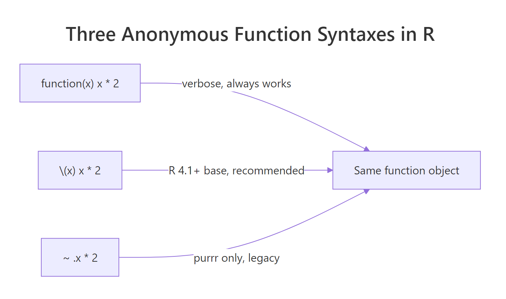
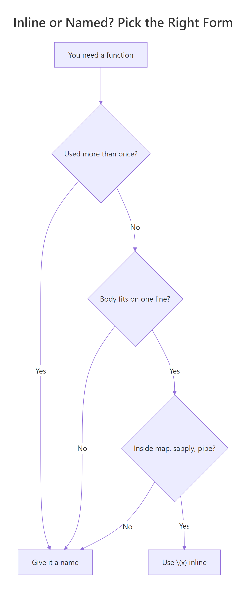

R Anonymous Functions: The \\(x) Syntax That Replaces function(x)
R's \\(x) is a compact shorthand for function(x), introduced in R 4.1. It lets you write one-line inline functions inside sapply, purrr::map, and pipes without the usual boilerplate, and saves a named function object only for logic that really earns a name.
What does \\(x) do in R?
Most R users write function(x) x * 2 on autopilot and never notice that the keyword function is eight characters longer than it needs to be. R 4.1 added a backslash form, \(x) x * 2, that saves the noise in exactly the places it hurts most: inline helpers inside sapply, map, and pipes. The two forms produce the same function object, and we can prove it in one block.
Below, we build the same doubling function twice, once with function(x) and once with \(x), call both on the same input, and compare their bodies.
Both calls return 10, and identical(body(long), body(short)) is TRUE. The parser turns \(x) x * 2 into exactly the same R function object as function(x) x * 2. There is no runtime cost, no special class, no subtle difference in scoping, just fewer characters to type and read.
\(x) is pure syntactic sugar, same object, shorter name. The R parser rewrites it to function(x) before your code ever runs, so there is nothing new to learn about scoping, closures, or evaluation.Try it: Write an anonymous function that subtracts 3 from its argument, assign it to minus3, and call it on 10.
Click to reveal solution
Explanation: \(x) x - 3 is shorthand for function(x) x - 3. Assigning it to minus3 is the same as any other function assignment.
When should you use \\(x) instead of function(x)?
The whole point of \(x) is inline use, when the function is born, used once, and thrown away in the same expression. If you are going to bind the function to a name (as we just did with minus3), stick with function(x), it reads more like prose. Save \(x) for the spot where writing function(x) would push a one-liner onto two lines.
The classic example is sapply. Here we square each integer from 1 to 5 without ever naming the squaring function.
sapply walks 1:5 and hands each element to our \(x) x^2. The result is a numeric vector, stored in squares. Writing this as sapply(1:5, function(x) x^2) would work identically but makes the eye trip over the word function every time, noise you don't need.
The same pattern shines inside a pipe. Here we add 10 to each element as the last step of a pipeline.
Read it left-to-right: take 1:5, pipe it into sapply, and for each element apply \(x) x + 10. The pipe's readability depends on keeping each step short, and \(x) is what keeps the inline step short.
\(x) inline inside sapply, vapply, Filter, Reduce, Map, and every purrr::map* variant. Any higher-order function that takes another function as its argument is a good home for it, that is where the verbose function(x) keyword adds the most visual noise.Try it: Use sapply with an anonymous function to compute the cube of each integer from 1 to 4. Assign the result to cubes.
Click to reveal solution
Explanation: The anonymous function \(x) x^3 raises each element to the third power. sapply simplifies the result to a numeric vector.
How does \\(x) compare to purrr's formula (~) syntax?
If you have read any tidyverse code from before 2022, you have seen a third way to write an anonymous function: the tilde form, ~ .x + 1. The purrr package invented this in the days when base R had no shorthand and typing function(x) felt painful. Now that \(x) exists in every R 4.1+ installation, purrr accepts all three forms, and the native \(x) form is the one to reach for in new code.

Figure 1: Three syntaxes for anonymous functions, all produce the same function object.
The block below shows all three styles producing the identical result with purrr::map_dbl.
All three vectors are equal because all three anonymous functions do the same thing. The difference is cosmetic: function(x) is the verbose baseline, \(x) is the shortest form that still names its argument, and ~ .x hides the argument behind a magic .x that only purrr (and rlang::as_function) understands.
~ formula form is still supported, but new tidyverse code prefers \(x). The \(x) form shows real argument names in stack traces and works with any function that accepts an R function, not just purrr. The tilde form lives on for backwards compatibility.Try it: Rewrite map_dbl(1:3, ~ .x * 3) using the \(x) form. The result should be 3 6 9.
Click to reveal solution
Explanation: ~ .x * 3 becomes \(x) x * 3. The argument name changes from the implicit .x to the explicit x, which makes stack traces clearer when things go wrong.
What are the gotchas of \\(x) in R?
The \(x) form is small, but three rough edges catch new users: multi-argument forms, braced bodies, and calling an anonymous function immediately. Each one comes from how the parser reads \(...), and each has a one-line fix.
First, multiple arguments. The form takes any number of arguments separated by commas, just like function(...). Here we combine two vectors element-wise with Map.
Map walks the two input vectors in parallel and hands each pair of elements to \(x, y) x + y. Note that x and y are ordinary names, there is nothing magic about .x and .y. Those belong to purrr's tilde form, not to base R.
Second, braced vs unbraced bodies. A one-expression body needs no braces; multi-statement bodies do.
a uses a one-expression body, so no braces are needed. b uses a two-statement body, so the braces are required, the same rule you already know from function(x) { ... }. Notice the outer parentheses: we wrap the whole \(x) ... in ( ... ) so that R reads it as an expression that can be called with (5) immediately afterwards.
\(x) binds weakly, wrap the function in parentheses when you want to call it immediately. Write (\(x) x + 1)(4), not \(x) x + 1(4). Without the outer parens, R parses 1(4) as a call and raises an error. The same rule applies when piping directly into an anonymous function: 4 |> (\(x) x + 1)().Try it: The expression 4 |> \(x) x + 1 fails because the anonymous function is not wrapped in parentheses. Fix it so it returns 5.
Click to reveal solution
Explanation: The native pipe requires the right-hand side to be a function call. Wrapping the anonymous function in parentheses turns \(x) x + 1 into a value, and the trailing () calls it with the piped-in 4.
When should you NOT use an anonymous function?
Anonymous functions are a convenience, not a goal. Every time you write one, you pay three small costs: the function has no name in error messages, it cannot be unit tested on its own, and it cannot be reused from anywhere else. When any of those costs starts to matter, extract the body into a named function.

Figure 2: Decide inline \(x) vs a named function before you write it.
Compare the two blocks below. The first crams a multi-step scoring rule inline; the second pulls it out into score_row, which is now testable and reusable.
Both produce the same result, but the second version tells you what the inner logic means the moment you read its name. If score_row ever breaks, the stack trace will say score_row instead of FUN, which matters a lot the first time you are debugging at 11pm. And next quarter, when someone else needs the same rule, they can call score_row directly instead of copy-pasting a lambda.
Try it: Classify each snippet below as "inline" (leave as \(x)) or "extract" (make it named). Store your answers as a named character vector in ex_choice.
Click to reveal solution
Explanation: One-liner helpers (A and C) stay inline because they are obvious at a glance. Anything with multiple steps (B) or reusable business logic (D) earns a name so it can be tested and reused.
Practice Exercises
These capstones combine the ideas from above. Each is solvable with the functions shown in this tutorial, try them before peeking at the solutions.
Exercise 1: Column means with map_dbl and \\(x)
Use purrr::map_dbl with an anonymous function to compute the mean of every column in mtcars. Store the result in my_means.
Click to reveal solution
Explanation: map_dbl iterates over the list-like columns of mtcars and applies \(x) mean(x) to each. The return type is guaranteed to be a named double vector, safer than sapply when column types are mixed.
Exercise 2: Refactor a nested lambda into a named helper
The starting code below computes the mean of each numeric column for each species of iris, using two nested anonymous functions. Refactor it so the inner logic lives in a named helper col_means, and the outer sapply uses \(g) only as glue.
Click to reveal solution
Explanation: col_means is now a normal, testable function, you can call it on any numeric data frame and the stack trace will name it. The outer sapply still uses an anonymous function as glue between the split groups and the named helper, which is exactly what \(x) is good at.
Complete Example
Let's put everything together. We'll compute per-species z-scores for each numeric column of iris, a small but realistic "apply per group" task. Z-scoring each column means subtracting its mean and dividing by its standard deviation, so every column ends up with mean 0 and standard deviation 1 within its group.
The outer lapply(split(iris[, 1:4], iris$Species), \(df) ...) walks the three species groups. Inside it, sapply(df, \(col) (col - mean(col)) / sd(col)) z-scores each numeric column using a second anonymous function. Both anonymous functions are one-liners used exactly once, the textbook sweet spot for \(x). The sanity checks at the end confirm the transformation worked: column means round to 0 and column standard deviations round to 1.
lapply(split(df, df$group), \(g) ...) idiom is one of R's most useful one-liners. It splits a data frame by a grouping column, applies an anonymous function to each piece, and returns a named list of results, no extra packages required.Summary
| Syntax | Example | Use when |
|---|---|---|
function(x) |
double <- function(x) x * 2 |
You are naming the function or writing a multi-line body. |
\(x) |
sapply(1:5, \(x) x^2) |
You need a one-line helper inline (R 4.1+). |
~ .x |
map_dbl(1:5, ~ .x^2) |
Working with legacy purrr code, prefer \(x) for new code. |
Key takeaways:
\(x)is pure sugar forfunction(x), same function object, no runtime cost.- Use it inline inside
sapply,Map,Filter,Reduce, and everypurrr::map*variant. - Multi-argument forms work:
\(x, y) x + y. - Wrap the function in parentheses to call it immediately:
(\(x) x + 1)(4). - If you would ever grep for, test, or reuse the logic, give it a real name.
References
- R Core Team, NEWS for R 4.1.0: introduction of
\(x)backslash syntax. Link - Wickham, H., Advanced R, 2nd Edition. Chapter 6: Functions. Link
- Wickham, H., Advanced R, 2nd Edition. Chapter 9: Functionals. Link
- purrr documentation,
map()reference and argument-function forms. Link - rlang documentation,
as_function()and how formulas become functions. Link - Jumping Rivers, New features in R 4.1.0: pipe and anonymous functions. Link
- tidyverse blog, Differences between the base R and magrittr pipes. Link
Continue Learning
- Writing R Functions, Learn how named functions work in R, including defaults,
..., and return semantics. - purrr map() Variants, The full
map,map_dbl,map_df,map2, andpmapfamily, all of which accept\(x)forms. - Reduce, Filter, Map in R, Base R's higher-order toolkit, and when each is sharper than a
forloop.